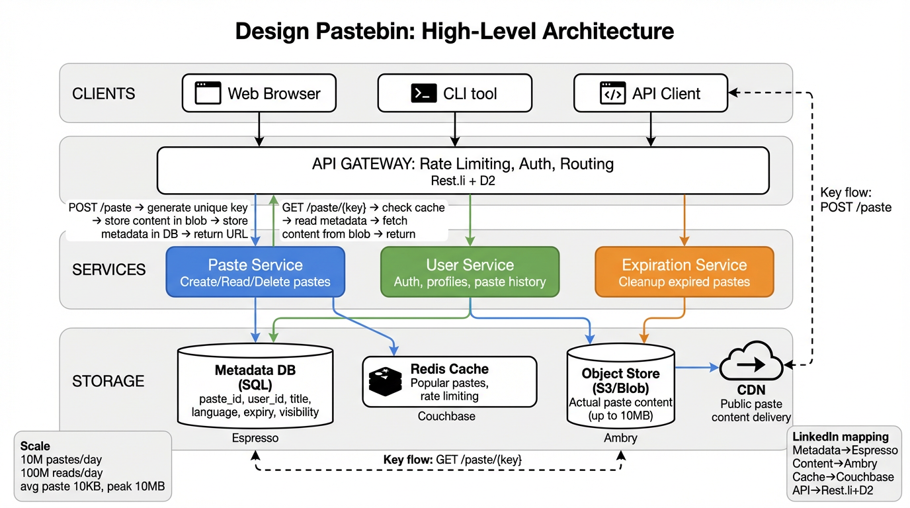
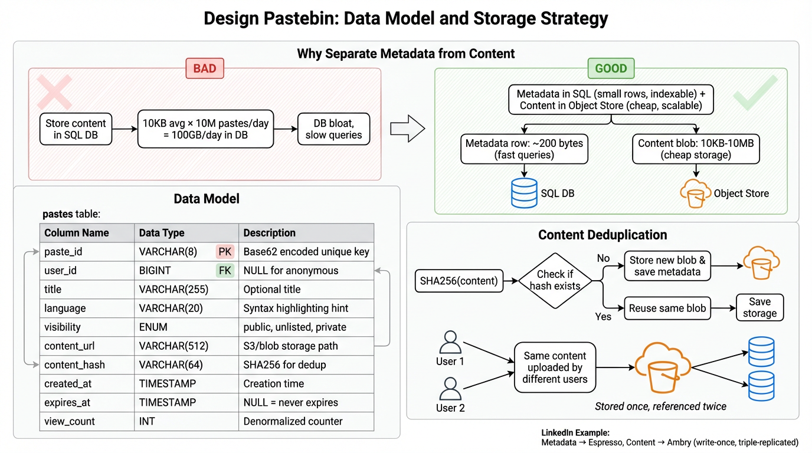

A deep dive into designing a scalable text-sharing service — content deduplication, blob storage, caching, expiration, and syntax highlighting.
Pastebin is a text-sharing service that lets users upload snippets of text (code, logs, config) and share them via a unique URL. Think of it as a simple, write-once, read-many content store with optional expiration and syntax highlighting.

unused_keys and used_keys.| Component | LinkedIn Equivalent | Notes |
|---|---|---|
| Load Balancer | Indis (LB) | LinkedIn’s software LB with TLS offload and L7 routing |
| API Servers | Rest.li | Stateless REST framework with built-in validation |
| Key Generation Service | d2 + UUID | Distributed ID generation using D2 service discovery |
| Metadata DB | Espresso | LinkedIn’s document store; schematized, indexed, horizontally partitioned |
| Content Store | Ambry | LinkedIn’s immutable blob store for large objects |
| Cache | Couchbase | Distributed caching layer used across LinkedIn’s services |
| CDN | LinkedIn CDN | Multi-POP edge network for static content |
| Cleanup Service | Azkaban / Gobblin | Scheduled job frameworks for background data management |
Before storing content, compute SHA-256(content). Use the hash as the blob key. If the hash already exists in the content store, skip the write and point the new paste metadata at the existing blob. This saves significant storage for commonly pasted snippets (e.g., “Hello World” programs, default configs).
content_hash = SHA-256(content).content_hash already exist?content_hash, set ref_count = 1.content_hash.| Column | Type | Description |
|---|---|---|
paste_id |
VARCHAR(8) | Primary key. Base62-encoded unique ID from KGS |
content_hash |
CHAR(64) | SHA-256 hash pointing to content blob |
title |
VARCHAR(255) | Optional user-supplied title |
language |
VARCHAR(30) | Syntax highlighting language (python, java, etc.) |
visibility |
ENUM | public | unlisted | private |
owner_id |
BIGINT | FK to user; NULL for anonymous pastes |
content_size |
INT | Size in bytes for display and quota enforcement |
created_at |
TIMESTAMP | Creation time (UTC) |
expires_at |
TIMESTAMP | NULL for never-expire; otherwise absolute expiry time |
| Column | Type | Description |
|---|---|---|
content_hash |
CHAR(64) | Primary key. SHA-256 of content |
content |
BLOB | Raw paste content (up to 10 MB) |
ref_count |
INT | Number of paste metadata records referencing this blob |
created_at |
TIMESTAMP | When blob was first stored |
| Column | Type | Description |
|---|---|---|
user_id |
BIGINT | Primary key |
username |
VARCHAR(50) | Unique username |
api_key |
VARCHAR(64) | API authentication key |
daily_quota |
INT | Max pastes per day (rate limiting) |
created_at |
TIMESTAMP | Account creation time |

paste_id from KGS and stores a pointer (content_hash) to the actual content.owner_id = NULL. Registered users get API keys and daily quotas.WHERE expires_at < NOW() in batches.POST /api/v1/pastes{
"content": "def hello():\n print('Hello, World!')",
"title": "My Python Script",
"language": "python",
"expiration": "1d",
"visibility": "unlisted"
}
content (required) — Raw text content, max 10 MBtitle (optional) — Human-readable title, max 255 charslanguage (optional) — Language for syntax highlighting (auto-detected if omitted)expiration (optional) — One of: 10m, 1h, 1d, 1w, 1m, never. Default: nevervisibility (optional) — public, unlisted, or private. Default: unlisted201 Created{
"paste_id": "aB3xK9z2",
"url": "https://paste.example.com/aB3xK9z2",
"raw_url": "https://paste.example.com/raw/aB3xK9z2",
"title": "My Python Script",
"language": "python",
"visibility": "unlisted",
"expires_at": "2025-04-08T14:30:00Z",
"created_at": "2025-04-07T14:30:00Z",
"content_size": 42
}
GET /api/v1/pastes/{paste_id}200 OK{
"paste_id": "aB3xK9z2",
"title": "My Python Script",
"language": "python",
"content": "def hello():\n print('Hello, World!')",
"visibility": "unlisted",
"created_at": "2025-04-07T14:30:00Z",
"expires_at": "2025-04-08T14:30:00Z",
"content_size": 42,
"view_count": 137
}
private, return 403 Forbidden unless the requester is the owner. If the paste has expired, return 404 Not Found with a message indicating the paste has expired.
DELETE /api/v1/pastes/{paste_id}204 No ContentHTTP/1.1 204 No Content
ref_count on the content blob. Soft-delete the metadata record. If ref_count reaches zero, the cleanup service will garbage-collect the blob.
GET /api/v1/pastes/{paste_id}/raw200 OKContent-Type: text/plain; charset=utf-8
def hello():
print('Hello, World!')
Cache-Control: public, max-age=3600 headers. Popular pastes are served directly from CDN edge nodes without hitting the origin.
expires_at; return 404 if expired| Layer | Strategy | Limit |
|---|---|---|
| Edge / LB | IP-based token bucket | 60 creates/min per IP |
| API Key | Sliding window counter | 500 creates/day per API key |
| Anonymous | IP + fingerprint | 10 creates/hour, max 50 KB each |
| Content | Size cap | 10 MB max per paste |
Content blobs are sharded by the first 2 characters of the SHA-256 hash, distributing across 256 shards (16 × 16). Each shard is replicated 3× across availability zones. This provides uniform distribution (SHA-256 output is uniformly random) and avoids hot-shard problems.
| Scaling Strategy | LinkedIn Technology | How It Applies |
|---|---|---|
| CDN for static content | LinkedIn CDN | Edge caching for raw paste content and highlighted HTML |
| Distributed cache | Couchbase | Hot paste metadata and content caching with LRU eviction |
| Read replicas | Espresso Replicas | Metadata read replicas in each datacenter for low-latency reads |
| Blob sharding | Ambry Partitions | Content-addressed blob store with hash-based partitioning and 3× replication |
| Async processing | Kafka | Event stream for async syntax highlighting, search indexing, and analytics |
| Rate limiting | Concord | Distributed rate limiting service at the edge |
| Service discovery | D2 | Dynamic service discovery and load balancing between API servers and storage |
| Background jobs | Gobblin / Azkaban | Scheduled cleanup of expired pastes and orphaned blobs |
A: Large pastes are uploaded via chunked transfer encoding. The API server streams content directly to the blob store without buffering the full body in memory. On the read path, large pastes are served with Content-Length and Accept-Ranges headers to enable partial downloads. The CDN caches them at the edge, so repeat reads don’t hit origin. For syntax highlighting, large pastes use client-side rendering with virtual scrolling (only highlight visible lines) to avoid freezing the browser.
A: Expiration uses a two-layer approach. Read-time check: every read compares expires_at against the current time; expired pastes return 404 immediately. Background cleanup: a scheduled job runs every 5 minutes, querying WHERE expires_at < NOW() LIMIT 1000 in batches. It soft-deletes metadata, decrements blob ref_counts, and garbage-collects blobs with ref_count = 0. The batch size and frequency are tunable. At 10M pastes/day with average 1-day TTL, the cleanup service processes ~7,000 expirations/minute, well within a single worker’s capacity. Multiple workers can shard by paste_id range for parallelism.
A: Multiple layers: (1) Rate limiting at edge, API key, and IP level (see Section 4). (2) Content scanning — async pipeline checks pastes against known malware hashes and blocklists. (3) Size limits — 10 MB cap per paste, 50 KB for anonymous users. (4) CAPTCHA for anonymous users creating more than 3 pastes/hour. (5) Reporting mechanism — users can flag pastes for review. (6) Account reputation — new accounts start with lower quotas. Flagged content is hidden immediately and reviewed within 24 hours.
A: Each content blob maintains a ref_count tracking how many paste metadata records reference it. When a paste expires or is deleted, its metadata is removed and the blob’s ref_count is atomically decremented. The blob is only garbage-collected when ref_count reaches zero. This means if User A creates paste “Hello World” (expires in 1 hour) and User B creates the same paste (never expires), the content blob persists because User B’s reference keeps ref_count > 0. The atomic decrement uses UPDATE SET ref_count = ref_count - 1 WHERE content_hash = ? AND ref_count > 0 to prevent underflow. A periodic consistency checker scans for blobs with ref_count = 0 and no referencing metadata as a safety net.